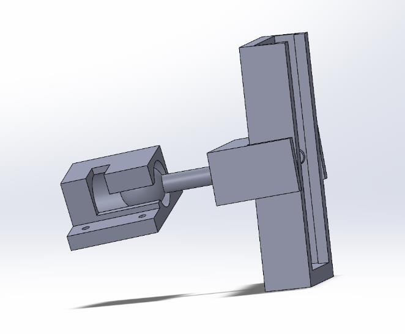
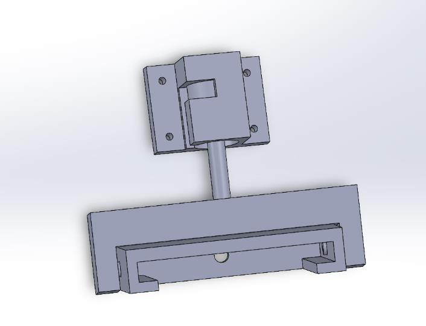
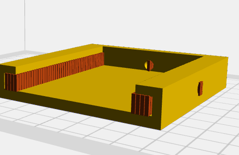
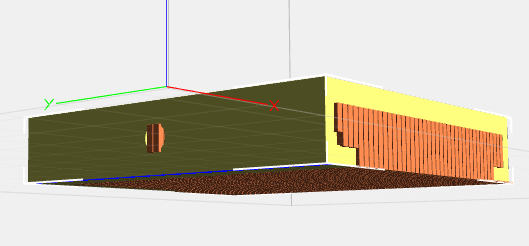
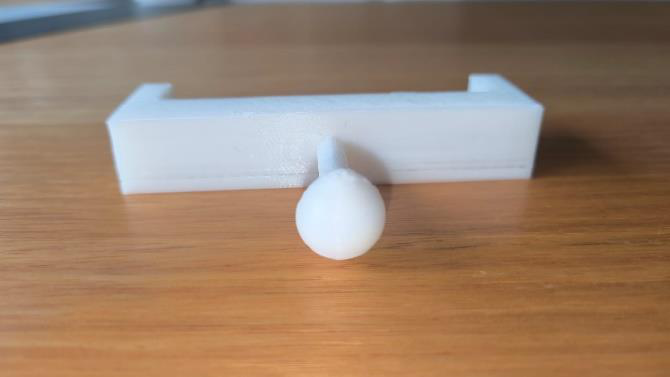
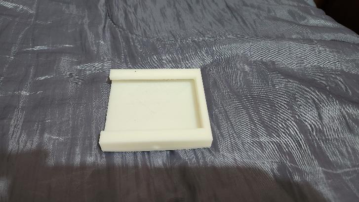
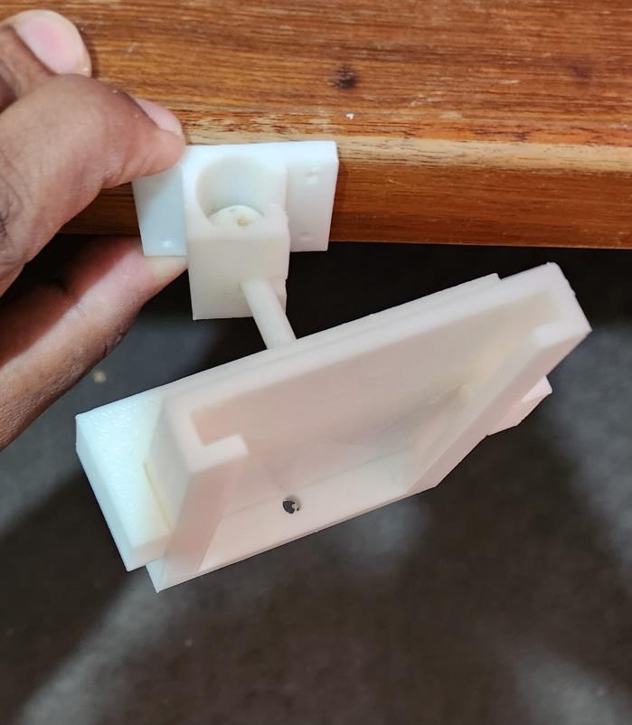

Course
MTE5887 — Advanced Manufacturing Processes
Institution
Monash University, Clayton
Outcome
Physical Prototypes Printed & Assembled
Project Overview
Approximately 700 million people globally still lack access to electricity — the majority in rural and remote regions where grid infrastructure is absent or uneconomical to build. Solar energy is one of the most viable pathways to closing that gap, but access to mounting hardware is itself a barrier: manufactured brackets are expensive to import, fragile to ship, and often unavailable locally. This project addressed that problem directly.
The core proposition was simple: if FDM 3D printers — already used in community makerspaces, field research stations, and low-income settings worldwide — can produce functional solar cell brackets on-demand from locally-sourced filament, then the hardware dependency is eliminated. The bracket doesn't need to be shipped. It just needs to be printed.
UN Sustainable Development Goal 7 — Affordable and Clean Energy
The brackets produced in this project are scaled-down prototypes — proof-of-concept models demonstrating the manufacturing approach rather than full production parts. The design intent is real-world deployment: an FDM printer in a rural community can produce these brackets using widely available PLA filament, mount a solar cell, and provide electricity where none previously existed. No specialist tooling, no supply chain, no infrastructure dependency.
Two prototype bracket scales were developed: a compact portable holder for a single solar cell with a ball-joint rotation mechanism (for hand-adjustment toward the sun), and a larger structural frame for building-roof installation of a standard-size solar panel. Both were designed in SolidWorks, fabricated on the FlashForge Creator Pro in PLA, and physically assembled and evaluated against their functional requirements.
My Contributions
On a three-person team, my formally assigned responsibilities covered the foundation work that determined every downstream decision: design conceptualisation, CAD modelling, and material research and selection. Beyond those assignments, I contributed to quality control, testing, report writing, and presentation preparation alongside the rest of the team.
- Design conceptualisation: Led the ideation process — evaluated multiple approaches before converging on the two-bracket strategy. Defined the functional requirements (portability vs. structural robustness), key DfAM constraints (build volume, overhang limits, bridging, minimum feature size), and the final design direction for both models.
- CAD modelling: Built all SolidWorks models for both bracket assemblies — holder body, fixture, panel frame, and rod-and-socket rotation joint — with FDM-specific considerations applied throughout (wall thickness, draft angles, feature clearances).
- Material research and selection: Evaluated PLA, PETG, ABS, and ASA against the application requirements: structural load, UV resistance, thermal stability, and FDM printability on the Creator Pro. Identified ASA as the technically optimal choice; documented PLA as the practical substitute given material availability.
CAD Design — Two Bracket Systems
Both designs were developed in SolidWorks 2024 with the FlashForge Creator Pro's 230×150×140 mm build envelope as the primary constraint. Feature sizes were kept above the 0.4 mm nozzle diameter minimum, and overhanging geometry was minimised to reduce support material requirements and improve surface quality on functional faces.


Material Selection
Four FDM-compatible materials were evaluated against the bracket's operating environment: outdoor UV exposure, sustained structural load (panel weight and wind), thermal cycling, and dimensional stability over time.
Optimal — Unavailable
ASA (Acrylonitrile Styrene Acrylate)
Superior UV and weather resistance compared to all alternatives. High thermal stability and good mechanical strength for outdoor structural use. Technically the correct material — not available on the Creator Pro at time of fabrication.
Selected — Fabrication Material
PLA (Polylactic Acid)
Widely available globally — including in low-income and remote settings — with excellent FDM printability and sufficient strength for prototype evaluation. Renewable plant-based feedstock supports sustainability goals. Limitation: lower thermal resistance and UV durability than ASA — acceptable for this prototype stage; ASA or PETG-CF would be specified for field deployment.
Evaluated — Not Selected
ABS (Acrylonitrile Butadiene Styrene)
Good mechanical properties and moderate UV resistance, but warping during printing requires an enclosed heated chamber and acetone post-processing. Higher emission of volatile organic compounds during printing.
Evaluated — Not Selected
PETG (Polyethylene Terephthalate Glycol)
Good toughness and chemical resistance, but weaker UV stability than ASA and prone to stringing and moisture absorption during long prints. Marginal advantage over PLA for this application.
Build Orientation & Print Parameters
Build orientation directly determines structural integrity, surface finish, and support material usage in FDM. For the solar brackets, a vertical (flat-face-down) orientation was selected: it aligns layer interfaces perpendicular to the primary bending load direction, produces a smooth bottom surface from contact with the build plate, and minimises support structures on functional faces.


Key process parameters were selected to balance surface quality against print time. A 0.18 mm first layer height and 0.27 mm subsequent layer height with 50% hexagonal infill were used — the hexagon pattern providing the best strength-to-material ratio for the panel tray geometry. A 10 mm/s first-layer speed ensured bed adhesion before stepping up to 60 mm/s for the body.
Fabrication — Printed Parts


Assembled Prototype
All printed components were cleaned of support material, assembled, and mounted onto a test rod to validate fit and mechanical function. The ball-and-socket joint on the small bracket allows the panel face to be angled for solar tracking by hand, while the larger bracket clips onto a surface mount rail using the corner tabs.


Defects Observed & Mitigations
- Warping at base: Thermal contraction during cooling caused bottom-layer curl on larger flat parts. Mitigation: increase bed temperature, slower first-layer speed, and raft enabled — all applied in final print run.
- Z-axis stepping: Visible periodic banding on vertical walls from inconsistent Z-axis motor movement. Mitigation: reduce layer height for finer resolution, reduce print speed to improve motor accuracy at each increment.
- Layer shift: Occasional mid-print X/Y offset observed in early test prints. Mitigation: tighten belt tension, reduce travel speed, and tune slicer outer wall settings to reduce vibration-induced slip.
Outcomes
Scaled Prototypes — Real Intent
Both bracket designs — portable single-cell holder and building-mount panel frame — printed, assembled, and validated as proof-of-concept prototypes. The real-world application: enabling communities without grid access to manufacture their own solar mounting hardware on-demand using a local FDM printer and commodity filament.
DfAM Applied End-to-End
Design decisions at every stage — wall thickness, overhang angle, feature clearance, build orientation — were grounded in FDM process constraints rather than treated as afterthoughts.
Material Trade-off Documented
ASA identified as the technically correct long-term material for UV and thermal resistance; PLA validated as a suitable substitute for prototype evaluation and decentralised manufacturing contexts.
Print Defects Diagnosed & Addressed
Warping, Z-stepping, and layer shift observed, root-caused, and resolved through parameter adjustments — building practical FDM process knowledge beyond textbook theory.